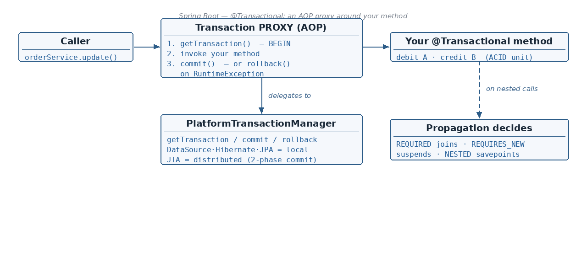

Where can @Transactional go?
☕ 7 min read · 🎬 Video walkthrough · 📊 UML diagram · 💻 Runnable code
⚡ In a nutshell — What a critical section is, and why transactions exist · The ACID properties, one by one · @Transactional — where to put it and how it works internally (AOP) · The TransactionManager class hierarchy — local vs distributed
A critical section is a code segment where shared resources are being accessed and modified. When multiple requests try to access this critical section, data inconsistency can happen.

The solution is the usage of a Transaction — it helps to achieve the ACID properties:
The classic money-transfer shape — everything between begin and end is one unit, and this is exactly what @Transactional wraps around your method:
BEGIN TRANSACTION
- Debit from A
- Credit to B } @Transactional
if all success: COMMIT
else: ROLLBACK
END TRANSACTION
Dependencies needed: spring-boot-starter-data-jpa plus your database driver dependency.
<dependency>
<groupId>org.springframework.boot</groupId>
<artifactId>spring-boot-starter-data-jpa</artifactId>
</dependency>
<dependency>
<groupId>com.mysql</groupId>
<artifactId>mysql-connector-j</artifactId>
</dependency>
Activate transaction management by using @EnableTransactionManagement in the main class:
@SpringBootApplication
@EnableTransactionManagement
public class MyApplication { ... }
Good to know: Spring Boot auto-configuration usually enables transaction management for you when it sees a DataSource — but the notes' explicit
@EnableTransactionManagementmakes the intent visible and is required in plain Spring.
Transaction Management in Spring Boot uses AOP:
@Transactional annotation — like @within(org.springframework.transaction.annotation.Transactional).invokeWithinTransaction method, present in the TransactionInterceptor class.Added — the self-invocation pitfall: because this is AOP (proxy-based), a
@Transactionalmethod called from inside the same class bypasses the proxy, so no transaction is created. Call it from another bean, or self-inject the proxy.
PlatformTransactionManager defines 3 methods: getTransaction, commit, rollback.AbstractPlatformTransactionManager provides the default implementation of those methods.@Component
public class User {
@Transactional
public void updateUser() {
System.out.println("Hello");
}
}
Based on the underlying DataSource used (JDBC / JPA etc.), Spring Boot will choose the appropriate Transaction Manager.
Note: you can create a bean to tell Spring which transaction manager to use:
@Bean
public PlatformTransactionManager userTransactionManager(DataSource dataSource) {
return new DataSourceTransactionManager(dataSource);
}
@Transactional(transactionManager = "userTransactionManager")
public void updateUser() { ... }
Added: two more useful
@Transactionalattributes —readOnly = true(optimization for pure reads) androllbackFor = Exception.class(by default rollback happens only for unchecked exceptions; checked exceptions do NOT roll back unless you say so).
Added: a favourite interview trap, so let's spell it out. Default rule: rollback happens only for
RuntimeExceptionandError. Checked exceptions COMMIT.
@Transactional
public void transfer() throws Exception {
debitAccountA();
throw new Exception("checked exception");
// the transaction still COMMITS the debit — checked != rollback!
}
@Transactional(rollbackFor = Exception.class) // now checked rolls back too
public void transferSafe() throws Exception { ... }
@Transactional(noRollbackFor = ValidationException.class) // opt OUT for one type
public void validateAndSave() { ... }
The rollback-only trap — catching the exception does NOT save the transaction:
@Transactional
public void outer() {
saveOrder();
try {
inner(); // REQUIRED (default) -> joins the SAME transaction
} catch (RuntimeException e) {
// swallowed... but too late: when inner() threw, Spring already marked
// the SHARED transaction "rollback-only". At commit time outer() blows
// up with UnexpectedRollbackException — and saveOrder() is rolled back.
}
}
@Transactional
public void inner() { throw new RuntimeException("boom"); }
If inner() were REQUIRES_NEW, only its own transaction would roll back, and outer() could still commit. That is the practical reason REQUIRES_NEW exists.
Added: the remaining attributes in one line —
timeout = 5(seconds; the transaction is rolled back if it runs longer) andisolation = Isolation.READ_COMMITTED(how parallel transactions see each other — the whole next topic).
Why would you need it? Look at this method:
@Transactional
public void updateUser() {
// 1. Update DB
// 2. External api call <-- PROBLEM
// 3. Update DB
}
It creates a problem because of step 2 — the external API call: the whole method is one transaction, so a slow external call keeps the DB transaction (and its connection + locks) open. Programmatic management lets you keep the transaction only around the DB work.
Approach 1 — PlatformTransactionManager directly:
@Component
public class UserProgrammaticApproach1 {
private final PlatformTransactionManager userTransactionManager;
UserProgrammaticApproach1(PlatformTransactionManager userTransactionManager) {
this.userTransactionManager = userTransactionManager;
}
public void updateUserProgrammatic() {
// external API call can happen HERE, outside the transaction
TransactionStatus status = userTransactionManager.getTransaction(null);
try {
System.out.println("Insert Query");
System.out.println("Update Query");
userTransactionManager.commit(status);
} catch (Exception e) {
userTransactionManager.rollback(status);
}
}
}
Approach 2 — TransactionTemplate (less boilerplate):
@Component
public class UserProgrammaticApproach2 {
private final TransactionTemplate transactionTemplate;
UserProgrammaticApproach2(TransactionTemplate transactionTemplate) {
this.transactionTemplate = transactionTemplate; // constructor injection
}
public void updateUserProgrammatic() {
TransactionCallback<TransactionStatus> dbOperationTask = (TransactionStatus status) -> {
System.out.println("Insert");
System.out.println("Update");
return status;
};
transactionTemplate.execute(dbOperationTask); // commit/rollback handled for you
}
}
@Bean
public TransactionTemplate transactionTemplate(PlatformTransactionManager userTransactionManager) {
return new TransactionTemplate(userTransactionManager);
}
When we try to create a new transaction, Spring first checks the propagation value set — this tells whether we have to create a new transaction or not.
Example setup — a transactional method calling another transactional method:
@Transactional
public void method1() { // parent transaction starts here
...
method2(); // what happens now depends on method2's propagation
}
@Transactional(propagation = Propagation.REQUIRED_NEW)
public void method2() { ... }
Added: NESTED is the often-forgotten 7th level. With a parent present it does NOT suspend it (unlike REQUIRES_NEW) — it sets a JDBC savepoint inside the same transaction. If the nested part fails, only the work after the savepoint is rolled back and the parent may continue and commit. It needs savepoint support: works with
DataSourceTransactionManager(plain JDBC), but not with JPA/Hibernate.Also mind the exact enum spelling in real code: it is
Propagation.REQUIRES_NEW(the notes' "REQUIRED_NEW" is the same concept).
Each one as written in the notes:
@Transactional(propagation = Propagation.REQUIRED) // if parent present: use it, else create new
@Transactional(propagation = Propagation.REQUIRED_NEW) // suspend parent, new txn, resume parent
@Transactional(propagation = Propagation.SUPPORTS) // use parent if present, else no txn
@Transactional(propagation = Propagation.NOT_SUPPORTED) // suspend parent, run without txn, resume
@Transactional(propagation = Propagation.MANDATORY) // parent required, else exception
@Transactional(propagation = Propagation.NEVER) // must NOT have parent, else exception
(1) With DefaultTransactionDefinition:
@Component
public class UserDAO {
...
DefaultTransactionDefinition transactionDefinition = new DefaultTransactionDefinition();
transactionDefinition.setName("Testing");
transactionDefinition.setPropagationBehavior(TransactionDefinition.PROPAGATION_REQUIRED);
TransactionStatus status = userTransactionManager.getTransaction(transactionDefinition);
...
}
(2) Using TransactionTemplate:
transactionTemplate.setPropagationBehavior(TransactionDefinition.PROPAGATION_REQUIRED);
transactionTemplate.setName("Template Testing");
readOnly = true enables driver/ORM optimizations and can route to read replicas with a routing DataSource.rollbackFor = Exception.class deliberately, org-wide, or document the default loudly.data-jpa + DB driver dependencies; activate with @EnableTransactionManagement.@Transactional on a class applies to its public methods only; on a method, just that method.@Transactional methods → Around advice → invokeWithinTransaction in TransactionInterceptor. Self-invocation bypasses it.PlatformTransactionManager (getTransaction/commit/rollback) → AbstractPlatformTransactionManager → DataSource/Hibernate/JPA (local) and JTA (distributed, 2-phase commit).transactionManager=); Programmatic = code — PlatformTransactionManager try/commit/rollback, or TransactionTemplate.execute(callback) — useful when an external API call must stay OUTSIDE the transaction.DefaultTransactionDefinition / TransactionTemplate).RuntimeException/Error only — checked exceptions commit; change with rollbackFor / noRollbackFor. Inner REQUIRED failure marks the shared txn rollback-only → outer commit throws UnexpectedRollbackException even if you caught the exception (REQUIRES_NEW isolates the inner failure).timeout (seconds), isolation (next topic), readOnly.Next topic: Isolation Levels and DB Locking — what happens when transactions run in parallel.
👏 Found this useful? Give it a few claps so more developers discover it, and follow for the whole series — every article ships with a UML diagram, runnable code, a narrated video, and a companion PDF. Happy building! 🚀